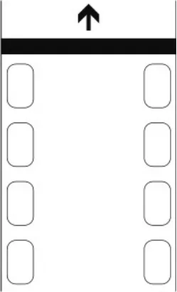

カート競技会運営に関する規定_20240801
P.1１９７２年 １月 １日制 定１９９０年１０月２３日改 定１９９３年 ７月２１日改 定１９９４年 １月 １日施 行１９９５年１０月 ５日改 定１９９６年 １月 １日施 行１９９７年１０月２３日改 定
１９９８年 １月 １日施 行１９９８年１０月２３日改 定１９９９年 １月 １日施 行１９９９年１０月２２日改 定２０００年 １月 １日施 行2024年 7月26日改 定２０24年 8月 １日施 行
カート競技会運営に関する規定
第１章 オフィシャル
第１条 オフィシャルの構成
次の者はオフィシャルとして任命され、かつ補助員によって補任させることができる。
競技会審査委員 補給監察委員
競技長 コース委員
レースディレクター 信号員
計時委員 決勝審判員
技術委員 走路審判員
競技会事務局長 出発合図員（スターター）
車両検査委員
第２条 ＪＡＦオブザーバー
ＪＡＦは、必要があると認められる場合には、当該大会に関するオブザーバーを任命し、派遣することができる。オブザーバーは、オフィシャルに対し指導することはできるが、オーガナイザーとエントラントとの間の紛争その他の仲介をしてはならない。
第３条 その他のオフィシャル
オーガナイザーは、必要とする場合は、第１条に定める以外のオフィシャルを任命することができる。
第４条 オフィシャルの条件
オフィシャルとなる者は、ただ一つの大会の任命された役務に専心しなければならない。同日行われる他の大会のオフィシャルを兼務すること、エントラントまたはドライバーとなることのいずれも禁止される。ただしＪＡＦの承認を受けた場合は、この限りではない。また競技会によって直接利益を受ける立場にある者と、利害関係を有してはならない。
第５条 オフィシャルの補助者の年齢制限
オフィシャルの補助者となる者は、満18歳以上の者でなければならない。
ただし、満16歳以上18歳未満の者でも親権者または保護者の同意書を提出すれば、オフィシャルの補助者となることができる。
第２章 オフィシャルの責任、義務および権限
第６条 競技会審査委員会
１．審査委員会は、ＪＡＦに対して責任を負うものであり、競技会の組織または運営に対しての責任を有さない。
２．審査委員会は、国際モータースポーツ競技規則、国際カート規則、国内競技規則、ＪＡＦ国内カート競技規則、特別規則、公式プログラムおよび公式通知が遵守されるよう監督し、競技会中に生ずる紛争または抗議を裁定する権限を有する。
３．審査委員会は、競技会終了後14日以内に、当該競技会に関する審査委員会報告書をＪＡＦに提出しなければならない。
第７条 レースディレクター
同一タイトルまたは同一内容で開催されるレースには、その全開催期間をとおしてレースディレクターを任命することができる。任命する場合には、当該レースディレクターの義務と権限を関連競技規則中に明示すること。
第８条 競 技 長
競技長は、競技会審査委員とＪＡＦオブザーバーを除くすべてのオフィシャルについての責任と、競技会の運営に関
P.2しての一切の責任と権限を有する。
競技長は補助員によって補佐されることができる。
第９条 技術委員長
技術委員長は、競技長のもとにあって、競技に参加する車両の適格性とドライバーの装備を検査し、それらの競技への出場の可否を判断する責任と権限を有する。また検査の結果について、競技長に報告しなければならない。
第10条 計時委員長
計時委員長は、競技長のもとにあって、競技の計時と判定に関しての責任と権限を有する。競技の結果については、競技長に報告しなければならない。
第11条 コース委員長
コース委員長は、競技長のもとにあって、コースが常に競技のための適性を維持されるように監視する責任と権限を有する。
第12条 競技会事務局長
競技会事務局長は、競技会の組織およびこれに関係ある告示のすべてについて責任を有するものとする。また事務局長は、すべての役員がそれぞれの任務について精通し、かつ必要な付帯的資料を具備していることを確認しなければならない。事務局長は必要ならば各競技の最終的報告書の作成について、競技長を補佐しなければならない。
第13条 その他のオフィシャル
上記以外に、必要に応じて任命されたオフィシャルは、それぞれに定められた役務に従事し、責任者を補助するものとする。
第３章 信 号
第14条 信号の種類
ドライバーに対する信号は、旗、信号板または灯火信号によって行わなければならない。信号に用いる旗の種類と、その示す意味は次の通りとする。
１．国旗－スタート
通常は国旗により合図される。
スタート合図は灯火信号（赤／緑）に替えてもよい。この場合の取付け方法は国際モータースポーツ競技規則付則Ｈ項に従うこと（黄色灯は不要）。
２．青 旗
周回おくれになろうとしている者に示される。
静止：追い越されようとしているので、現在の進行方向をそのまま保持せよ。
振動：他のドライバーによって追い越されようとしているのでその者に譲れという意味。
３．白 旗
低速車両（サービス車両も含む）がトラック上にある。
４．黄 旗
静止：危険である。徐行せよ、追越を禁止する。
振動：非常に危険である。追越を禁止する。停止準備をせよ。
５．赤縦縞の入った黄旗
静止：前方路上に油や水たまりがあり、路面が滑りやすいことを意味する。
振動：油や水たまりがすぐ近くの路上にあり。
６．緑 旗
競技続行せよ。障害は除去された。
７．赤 旗
レース中止。すべてのドライバーは直ちにレースを中止し、オフィシャルから指示された場合はどの地点ででも停止できる態勢でスタートラインまで徐行して停止すること。
８．対角線で黒と白に分けた旗と番号を添えて提示
非スポーツマン的行動に対する最後の警告。
９．黒旗と番号を添えて提示
指示された番号のカートは、直ちにピットインし、そのドライバーは競技長の所まで出頭すること。
P.3１０．黒と白のチェッカー旗
競技終了。
１１．黄色の山型を付した緑色旗
ミススタートを示す。
１２．オレンジディスクのある黒旗（番号をそえて提示）
技術的トラブルのある車両のドライバーに対する停止命令。そのドライバーは車両修理後再出走できる。
１３．青・赤（二重対角線で区分）旗（番号をそえて提示）
追い越されようとしている、もしくは既に追い越されたドライバーの停止を示す。
この旗を使用する場合その競技会の特別規則書に規定されていなければならない。
第15条 信号の使用法
第13条に定める信号のうち、危険または障害を示す信号を使用する場合は、コース外の危険または障害の発生した場
所にもっとも近い箇所で行うことを原則とする。
その場合の詳細については次の通りである。
１．振動した旗による警告（黄旗または赤の縦稿のある黄旗）は、危険箇所直前の監視ポストで示される。監視ポストが設置されていないコースについては、危険箇所直前のコース委員（ポスト要員）により示される。
旗の振動表示はその旗の持つ意味を強化または強調するものである。
２．黄旗によって危険が予告された場合、他のドライバーは、黄旗提示地点から危険箇所を通過するまでの間、追越をしてはならない。
３．緑旗は、すべての障害が除去されたこと、あるいは前に出された旗信号の解除を意味するものであるが、公式練習や予選ヒート等の開始の合図として用いてもよい。
４．赤の縦縞の入った黄旗は、実際の危険が油や水によるものでなく、路面が滑りやすい状態にあるときにも使用される。
５．先頭のカートが規定の競技内容を終了し、または終了する以前に、誤ってレース終了の信号が出された場合は、その時点をもって競技終了とする。また信号が遅れた場合は、信号に無関係に、競技は正規の時点に終了したものとして順位を決定する。
６．赤旗は、競技長もしくはその直接の指示によってのみ行使される。
第４章 競技会会場
第16条 会場およびその付近へのオフィシャルの配置
オーガナイザーは、コースおよびその他必要とする箇所には、観客の入場以前から退場までの間、オフィシャルを配置していなければならない。
第17条 危険に対する注意の喚起
オーガナイザーは、常に危険に対する注意を喚起しなければならない。特に次にあげるものは、競技会の開催にあたり必須のものとする。
「モーターレースは危険なので、立入禁止の場所には絶対に入らないでください。立入禁止の場所に入って事故があっても、オーガナイザーは責任を負いません。」
上記の文章を掲示し、またプログラム等に記載する。
第５章 コースに関しての遵守事項
第18条 コースエリアの確保
競技中はコース上に留まってはならない。ただしスタートの際、および競技長が特に認めた場合にのみ、ドライバー１人につき２名以内のアシスタントがコース内に立入ることを許される。
第19条 走行の方向
定められた方向と逆に走行してはならない。
第20条 コース上での停止
スタートを含めて、レース中コースエリア内で停止してしまったカートのドライバーは、腕を高く挙げて他のドライバーに自分が動かないことを示し、それらが過ぎ去ってからカートをレースの障害とならない安全な場所に移し、再ス
P.4タートが不可能な場合その場でオフィシャルの指示を待たなければならない。
第21条 ブレーキの故障
ブレーキ効果を失ったカートは、直ちにエンジンを停止し、レースの障害とならない安全な場所に移動しなければならない。
第22条 コースアウト
ドライバーは、定められたコース上を走行しなければならない。故意にコースから車輪を離して走行することはコースアウトと見なされる。
また衝突を避けるためにやむを得ずコースアウトした場合は、その位置にもっとも近いところから再びレースに復帰できる。
第23条 妨害の禁止
コースはつねに先入優先とし、追抜きをするものは、前方の車の走行を妨害してはならず、また前方の車は、後続の車の進路を妨害してはならない。
第６章 公式練習
第24条 公式練習の義務
オーガナイザーは、ドライバーに対して公式練習のための一定の時間、または数回に分けた時間を割当てなければならず、かつドライバーは規定の公式練習に参加しなければならない。この場合、スタートの方法を除いて、レースに適用されるすべての規則が、公式練習に対しても適用される。
第25条 出 走
同時に公式練習を行う場合は、レースにおける最大出走台数を超えてはならない。
第７章 レ ー ス
第26条 予選ヒートの分割
エントリー数が、コースの許容出走台数を超過したときは、参加者を分割して公式予選を行うことができる。
この場合は、各公式予選の上位者をもって決勝を行うものとする。
第27条 クラスの合併または追加
競技のクラスを合併し、あるいは追加する場合は、これによって影響を受けるドライバーの同意と、競技会審査委員会の承認を必要とする。この場合、競技からの脱退を希望するドライバーには、エントリーフィーを返還しなければならない。
第28条 スターティングポジション
スターティングポジションの決定に際しては、速いドライバーを前列に置くようにしなければならない。
スターティングポジションの決定の方法は、特別規則書に記載されなければならない。
第29条 スタートの方法
次の３つの方法のうち、いずれかのみとする。
１．フライング
計時が開始される瞬間において車両がすでにレーシングスピードにあるスタート。フライングスタートはタイムトライアルに対してのみ用いられる。
２．ローリング
低速で、フォーメーションラップを行ってから実施されるスタート。このスタートは、スターターがその速度、フォーメーションとイエローライン前に加速をしていないことに納得した場合にのみ、合図が出される。
３．スタンディング
計時を開始する瞬間に車両が静止状態にあるスタート方法を言う。
オーガナイザーはスタート方法（ローリングまたはスタンディングスタート）について当該競技会特別規則書に記載しなければならない。
すべてのスタートは国旗もしくは信号によって合図されなければならない。
イエローラインはスタートラインの25ｍ手前に引かれ、このラインを越えるまで加速することは禁止される。
P.5第30条 完 走
完走者となるためには、特別規則書に規定されない限り、レースの着順が１位の者がフィニッシュラインを通過後２分以内に、カートが自力で同ラインを通過し、その時点でレース距離（そのヒート１位の車両の周回数）の１／２以上を完了していなければならない。
この場合における自力とは、カートとドライバーが一体となり、他の助けをかりることなく、コース上を正しい方向に進行できる状態を言う。カートを押してフィニッシュラインを通過することは許されない。
第８章 再 車 検
第31条 再 車 検
レース終了後、再車検が行われる。
第32条 計 量
レース終了後、計量が行われる。この場合、ドライバーおよび車両は、レースのままの状態でなければならない。
第33条 再車検の拒否
オーガナイザーは、再車検を拒否し、または誤って受けなかった者を失格とすることができる。
第９章 特別措置
第34条 事故の速報
競技または群衆の雑踏によって重大な人身事故を生じた場合、オーガナイザーは、関係当局およびＪＡＦへ速報しなければならない。
第35条 未完了の競技における賞典
やむを得ず競技を未完了のまま終了させた場合、オーガナイザーは審査委員会の承認を得て、賞典を付与することができる。
第36条 レースの中断
事故、安全性の問題またはその他のいかなる理由によっても、競技を中断する必要があるとみなされた場合、競技長またはその指示により赤旗が提示される。
すべてのドライバーは直ちにレースを中止し、オフィシャルから指示された場合はどの地点でも停止できる態勢でスタートラインのあるコース左右両端、あるいは各競技会特別規則によって指定された場所まで徐行して停止すること。

レースの中断の結果は下記の通り：
ａ）レースが60％終了している場合、レースは成立したものとみなされ、赤旗提示前の周回時点の、終了順序で結果が決定される。
ｂ）60％以下の場合、レースは完全に再走行となり、第１回目のスタートは無効、取消となる。
１．予選および敗者復活戦では、最初に参加していた全てのドライバーが再スタートに参加する権利を与えられる。
２．決勝（第１および第２レース）では、中断する前の周にフィニッシュラインを越えたドライバーだけが再スタートに参加できる。
第37条 イベントの順序の変更
やむを得ない場合、オーガナイザーは審査委員会の承認のもとに、イベントの順序を変更することができる。
P.6第38条 延期、中止、取止め
やむを得ない状況のもとにおいて、オーガナイザーは審査委員会の承認のもとに、イベントの一部もしくは全部を延期し、中止し、または取止めることができる。ただし審査委員会の承認を必要とする。